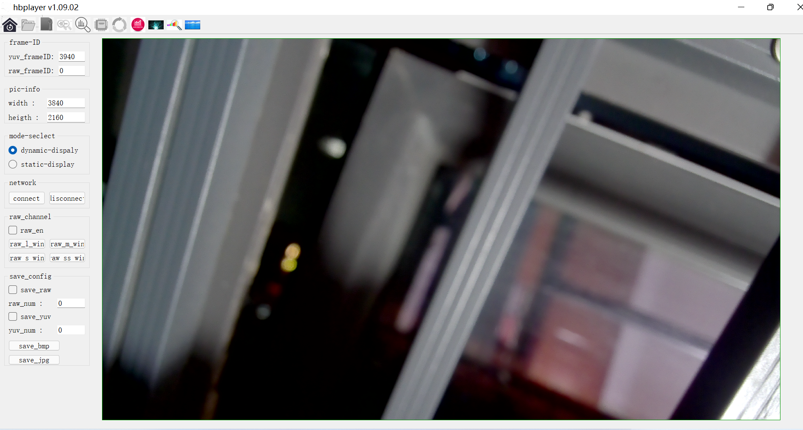
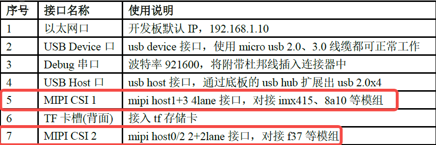

5.10.2. X3 Camera点亮说明
5.10.2.1. 范围
本章节概述了使用地平线tuning tool工具适配Camera的过程，用于帮助读者快速了解并掌握地平线camera框架，如何快速的新增camera配置，并出图预览。此外，针对点亮过程中的常见问题，本章节也做了具体说明。
5.10.2.2. 准备工作
硬件资源：X3设备、camera模组、网线、串口线、Windows PC。
软件资源：系统platform_source_code源码、Camera驱动源码、Hobot player预览软件、Sensor datasheet、Sensor的Initialize Settings
注意：Camera驱动库需要与系统镜像版本保持一致，系统镜像的编译、烧写请参照BSP开发指南章节。
环境确认：
1.确认Camera是否正常接入X3。使用i2cdetect命令探测总线id，可以参考本文档的2.4.6节摄像头使用。如果挂在i2c bus上的sensor可以被探测到，说明sensor接入正常，如下图：
如果无法探测到sensor，需要检测硬件连接、sensor mclk、reset pin是否有异常。
2.确认Hobot player是否正常打开。该软件主要用于Camera图像预览及抓取，使用前需要关闭PC杀毒软件。如果仍无法正常打开软件，说明缺少Windows组件，请从 X3M附加工具包 下载获取。
3.确认PC跟X3设备网络连通性。由于X3 camera图像数据是通过网络传输，因此调试前需要确认PC跟X3之间网络通信正常，且需要保证双向ping通。X3设备默认IP为192.168.1.10，如被修改，可通过串口登录后查询设备IP。
5.10.2.3. 添加新sensor点亮步骤
不同厂家的sensor，都会搭配风格各异的driver和setting。因此需要将原厂sensor驱动，转换成X3 camera驱动代码，并编译生成so库，最后将so库拷贝到设备的/lib/sensorlib/目录下。需要说明的是，在X3 mipi start之前，必须保证sensor没有开流。
X3平台进行新Camera适配时，只需要修改Camera驱动库及相关配置文件即可，系统库及内核驱动无需改动。
点亮过程中用到的配置文件，请拷贝SDK下的hbre/sensors/xxx目录到设备端/app直接修改，当确认图像正常后，可以获取配置文件，并加入到SDK中参与整体编译。文件清单如下：
| 文件名 | 所在目录 | 用途 |
|---|---|---|
| xxx_utility.c | SDK：hbre/camera/utility/sensor | sensor驱动 |
| xxx_setting.h | SDK：hbre/camera/utility/sensor/inc | sensor setting配置 |
| xxx_raw_10bit_3840x2160_online.json | SDK：hbre/sensors/xxx | online模式下VIO配置 |
| xxx_raw_10bit_3840x2160_offline.json | SDK：hbre/sensors/xxx | offline模式下VIO配置 |
| hb_mipi_xxx_raw10_30fps_2160P.json | SDK：hbre/sensors/xxx | sensor mipi配置 |
| hb_x3player.json | SDK：hbre/sensors/xxx | sensor平台接口配置 |
| start_xxx.sh | SDK：hbre/sensors/xxx | 预览脚本 |
表3-1
下面将详细介绍点亮新sensor主要的三个步骤。
步骤1 增加设备驱动
步骤1.1 sensor驱动文件添加
系统SDK目录hbre/camera/utility/sensor下提供了sensor驱动模板文件dummy_utility.c以及多种适配过的sensor驱动，当添加新camera支持时，可以仿照该部分文件进行代码的修改。
sensor_module_t dummy = {
.module = "dummy",
.init = sensor_init,
.deinit = sensor_deinit,
.start = sensor_start,
.stop = sensor_stop,
.power_on = sensor_power_on,
.power_off = sensor_power_off,
.power_reset = sensor_power_reset,
.extern_isp_poweron = sensor_extern_isp_poweron,
.extern_isp_poweroff = sensor_extern_isp_poweroff,
.extern_isp_reset = sensor_extern_isp_reset,
.spi_read = sensor_spi_read,
.spi_write = sensor_spi_write,
.set_awb = sensor_set_awb,
.set_ex_gain = sensor_set_ex_gain,
.dynamic_switch_fps = sensor_dynamic_switch_fps,
};
如上代码所示，X3 camera框架下的sensor驱动接口包含在sensor_module_t的结构体中，文件名、结构体名和module字段要统一，例如文件名为dummy_utility.c，那么结构体名和module字段要统一为dummy。对于新sensor点亮，下列函数需要用户自行实现：
init：sensor初始化、setting下发
deinit：sensor去初始化
start：sensor开流
stop：sensor关流
aexp_gain_control：sensor增益控制
aexp_line_control：sensor曝光行数控制
awb_control：sensor端AWB控制，需要disable isp AWB
af_control：自动对焦控制
zoom_control：zoom控制
userspace_control：用户回调功能开启控制
dynamic_switch_fps: sensor帧率切换，用户可以按需实现
对于3A控制，X3系统支持驱动注册和应用层回调两种方式，默认使用驱动注册。但是如果客户希望更加灵活的控制策略，推荐使用应用层回调函数的方式，接口定义如下：
| 函数 | 功能 | 传入参数 |
|---|---|---|
| aexp_gain_control | sensor 增益控制 | info：sensor 总线信息 mode：senosr 运行模式；linear/hdr/pwl again：sensor again 参数，最大4个 dgain：sensor dgain 参数，最大4个 gain_num：sensor gain 参数个数 |
| aexp_line_control | sensor 曝光控制 | info：sensor 总线信息 mode：senosr 运行模式；linear/hdr/pwl line：sensor line 参数，最大4个 line_num：sensor line 参数个数 |
| awb_control | sensor端awb控制 | info：sensor 总线信息； mode：senosr 运行模式；linear/hdr/pwl rgain：sensor rgain bgain：sensor bgain grgain：sensor rrgain gbgain：sensor gbgain |
| af_control | af 控制 | info：sensor 总线信息 mode：senosr 运行模式；linear/hdr/pwl pos：af 绝对位置 |
| zoom_control | zoom 控制 | info：sensor 总线信息； mode：senosr 运行模式；linear/hdr/pwl pos：zoom 绝对位置 |
| userspace_control | hal 层各类控制开关 | port：sensor 端口号 enable：使能用户回调控制开关，默认全部关闭。 位定义： #define HAL_LINE_CONTROL 0x00000001 #define HAL_GAIN_CONTROL 0x00000002 #define HAL_AWB_CONTROL 0x00000004 #define HAL_AF_CONTROL 0x00000008 #define HAL_ZOOM_CONTROL 0x00000010 |
| dynamic_switch_fps | sensor的帧率切换 | sensor_info: sensor的结构体信息；fps：帧率 |
需要注意的是，芯片要求在mipi start之前camera不能出流，否则会导致mipi phy状态异常，对于某些camera上电会默认出流的情形，需要在init函数中关流，在start函数中重新开流。
当sensor驱动和setting编写完成后，拷贝*_utility.c和*_setting.h到SDK对应目录中，并重新编译platform_source_code生成sensor驱动库，生成文件位于deploy/rootfs/lib/sensorlib中。
步骤1.2 sensor驱动结构体填充
如下代码是对sensor驱动结构体的初始化，需要根据每个sensor的实际情况来对应填写
turning_data.sensor_data.active_width = 3840;
turning_data.sensor_data.active_height = 2160;
turning_data.sensor_data.analog_gain_max = 255 * 8192;
turning_data.sensor_data.digital_gain_max = 0 * 8192;
turning_data.sensor_data.exposure_time_min = 1;
turning_data.sensor_data.exposure_time_max = Vmax - 8;
turning_data.sensor_data.lines_per_second = 67114; // 67114 2250*30//
turning_data.sensor_data.turning_type = 6; // gain calc
turning_data.sensor_data.fps = sensor_info->fps; // fps
//sensor turning data init
turning_data.normal.param_hold = IMX415_PARAM_HOLD;
turning_data.normal.param_hold_length = 1;
turning_data.normal.s_line = IMX415_LINE;
turning_data.normal.s_line_length = 3;
turning_data.normal.line_p.ratio = -256;
turning_data.normal.line_p.offset = 2246;
turning_data.normal.line_p.max = 2237;
turning_data.normal.again_control_num = 1;
turning_data.normal.again_control[0] = IMX415_GAIN;
turning_data.normal.again_control_length[0] = 1;
turning_data.normal.dgain_control_num = 0;
turning_data.normal.dgain_control[0] = 0;
turning_data.normal.dgain_control_length[0] = 0;
turning_data.normal.again_lut = malloc(256*sizeof(uint32_t));
if (turning_data.normal.again_lut != NULL) {
memset(turning_data.normal.again_lut, 0xff, 256*sizeof(uint32_t));
memcpy(turning_data.normal.again_lut, imx415_gain_lut,
sizeof(imx415_gain_lut));
}
turning_data.sensor_data.active_width：sensor实际输出的宽度
turning_data.sensor_data.active_height：sensor实际输出的高度
turning_data.sensor_data.analog_gain_max：a_gain最大倍数，举一个例子，turning_data.sensor_data.analog_gain_max =126*8192，最大倍率计算公式就是
2^(X/32)，其中X就是126，X这个值每一个sensor厂家不一样，需要从sensor手册或者sensor厂家查找得到；最大倍率也可以这样得到：先获取sensor最大增益，然后查找x3-ISP的增益表，得到对应的索引值，该索引值就是最大倍率。8192指2^(13),驱动中控制精度为13位turning_data->sensor_data.conversion：1时进行高低位转换，0不进行高低位转换
turning_data.sensor_data.digital_gain_max：d_gain最大倍数
turning_data.sensor_data.exposure_time_min：短曝光最小曝光时间(短曝光每帧最小曝光行数)，每行的曝光时间可以用公式
1秒/(帧率*(有效行+blank))即1/lines_per_second推算得出turning_data.sensor_data.exposure_time_max：短曝光最大曝光时间(短曝光每帧最大曝光行数),短曝光每帧最大曝光行数可以通过公式
单帧曝光时间/单行曝光时间，即(1/fps)/(1/lines_per_second)turning_data.sensor_data.exposure_time_long_max：长曝光最大曝光时间(长曝光每帧最大曝光行数)
turning_data.sensor_data.lines_per_second：每秒多少曝光行，计算公式为
1/每行时间或者(fps*vts)，其中vts在不同sensor的里面的名字可能有所不同，可能是frame_length、vts等，但含义都是每帧的所含的总共行数，包括有效行和blanking。lines_per_second亦可以理解成HMAX,需要注意的是有些sensor 无HMAX 概念turning_data.sensor_data.turning_type：ae控制的方式，统一填6
turning_data.normal.param_hold：group hold寄存器地址，sensor工作时候如果需要更新曝光相关设定需要操作很多寄存器：积分时间、增益、每帧行数等，它们的更新必须在同一帧完成并生效，否则同一帧图像可能会出现亮度差异的情况。这个时候需要group hold寄存器将跟积分时间、增益等一起打包写入，并且在同一帧生效。
turning_data.normal.param_hold_length：group hold寄存器地址位数
turning_data.normal.s_line：积分时间寄存器地址即控制一帧曝光行数的地址
turning_data.normal.s_line_length：line寄存器地址个数，1个字节就填1，2个字节填2，如此类推
turning_data.normal.line_p.ratio、turning_data.normal.line_p.offset、turning_data.normal.line_p.max：isp算出来的line转化为寄存器值，转化公式为：
y=ratio\*x+offset，其中ratio可以按照实际sensor的ratio*256然后取整设置，即ratio格式：xx.yyyyyyyy，当ratio为1时，设置256，当ratio为1.5时设置384，当ratio为-1时，设置-256，当ratio为-1.5时设置-384，max为line允许最大值turning_data.normal.again_control_num：again控制个数，最多支持4个again
turning_data.normal.again_control[4]：again寄存器地址，again_control[0]、again_control[1]、
again_control[2]、again_control[3]，如果again控制个数大于1个，下标对应的again寄存器地址要分别填上
turning_data.normal.again_control_length[4]：again寄存器地址的位数，如果again控制个数大于1个，下标对应的again寄存器地址位数要分别填上
turning_data.normal.dgain_control_num：dgain控制个数，最多支持4个dgain
turning_data.normal.dgain_control[4]：dgain寄存器地址，dgain_control[0]、dgain_control[1]、
dgain_control[2]、dgain_control[3]，如果dgain控制个数大于1个，下标对应的dgain寄存器地址要分别填上
turning_data.normal.dgain_control_length[4]：dgain寄存器地址的位数，如果dgain控制个数大于1个，下标对应的dgain寄存器地址位数要分别填上
turning_data.normal.again_lut：again lut表，fireware根据index索引lut表，查找sensor对应的寄存器值，lut表区分a_gain/d_gain，lut表格大小：again_lut[again_control_num][256], dgain_lut[dgain_control_num][256]
注意事项1：当某个gain值不存在时，该位填充0xffffffff，分配gain时，程序会向下查找，直到可以查到可以分配的gain，下发到kernel中的lut表应该是完成高低位转换，避免在kernel中进行，比如gain = 0x1234，写入寄存器0x3012，0x3013，有些sensor在0x3012中写0x12，有些sensor在0x3013中写0x12，在hal中转换屏蔽该差异性；
注意事项2：lut表示[0,255]共256 gain控制，转换公式为2^(x/32)，即实际的gain 倍数为[2^(0/32),2^(255/32)]， gain 的控制曲线为log 类型，即任何一颗sensor 的gain的控制被离散为256个控制点，原因是现在arm 3a的控制算法给出256个控制点，给出更多的控制点并不会提高gain的控制精度
不同的sensor控制方式举例：
1.os8a10 linear:
again_control_num = 1，
dgain_control_num = 1
2.imx327 linear
该sensor a_gain/d_gain 在一个寄存器，不能独立控制d_gain
again_control_num = 1
3.ar0231 pwl:
该sensor a_gain为分级，加入d_gain可以生成平滑曲线，不能独立控制a_gain/d_gain，故a_gain/d_gain合并控制
again_control_num = 3
dgain_control_num = 0
相同sensor不同模式举例（imx327/os8a10共有多种模式liner/dol2/dol3，不同模式下只能有一组a_gain,一组d_gain）：
1.os8a10 dol2 模式下short a_gain/long a_gain 配置同样的倍数，原因是现在arm 3a的控制算法在dol2/dol3/dol4模式下只给出一个gain控制，多个line控制接口，故不同帧的gain使用相同的控制倍数，不支持长短帧使用不同的gain控制倍数
2.imx327在dol2模式下，short gain/long gain使用同一个寄存器控制
again_control_num = 1
3.os8a10在dol2模式下，short gain/long gain使用不同的寄存器控制
again_control_num = 2
sensor的lut和isp控制变量的关系如下关系图：
| 编号 | 项目 | 说明 |
|---|---|---|
| 1 | ISP 控制变量 | ISP gain 控制变量有256个点 |
| 2 | 实际倍率 | 实际倍率[1,253],转换方法：y=2^(x/32)，如下图 |
| 3 | 实际倍率（db） | 实际倍率， 转换方法：10*log(2^(x/32)) |
| 4 | a_gain 寄存器值 | 实际不同倍率写入a_gain 寄存器的值 |
| 5 | d_gain 寄存器值 | 实际不同倍率写入d_gain 寄存器的值 |
AR0231的lut表，imx327的lut表，0144at的lut表，0233的lut表可以参考如下资料包：
X3M_SDK/board_support_package/platform_source_code/hbre/camera/utility/sensor/gain_table.xlsx
从sensor手册或者从sensor厂家要到lut查找表整理出关系如gain_table.xlsx，sensor驱动头文件的again_lut[]就是第D列，sensor驱动头文件的dgain_lut[]就是第F列，需要注意的是isp 控制点有1.0219倍，1.04427倍，但sensor 控制精度只有1.1，1.2 等不同的倍率，所以1.0219，1.04427 等不同倍率写入寄存器值都为0x1，当isp分配1.044倍时，因写入的值与1.02倍率相同，故反馈给isp写入倍率为1.02倍，使用isp d-gain进行补偿，实际sensor的again/dgain有多少个倍率，again_lut/dgain_lut数组长度就是都多少，只要能看到lut表符合表格1中增长曲线就可以
步骤2 配置文件添加
步骤2.1 sensor配置文件添加
步骤2.1.1 VIO配置文件添加
参考SDK的hbre/sensors/xxx已有vio的配置文件，以sdb_imx415_raw_10bit_3840x2160_offline.json为例，包含VIO模块（SIF、ISP、DWE、IPU、GDC）的参数配置，这些配置信息需要根据具体sensor的分辨率、帧率、数据格式进行配置。online、offline配置文件，分别对应sif online isp和sif offline isp模式。下面列出文件中需要单独配置的部分，其余部分请保持默认值，无需关注。
| 字段1 | 字段2 | 字段3 | 字段4 | 描述 |
|---|---|---|---|---|
| SIF | input | mipi | enable | 使能mipi输入，默认为1 |
| ipi_channels | ipi通道数目，默认为1 | |||
| mipi_rx_index | mipi host通道号，取值范围0~3 | |||
| width | sensor图像输出宽度 | |||
| height | sensor图像输出高度 | |||
| format | mipi接收数据格式 0：raw 8：yuv422 8bit 10：yuv422 10bit | |||
| pix_length | 数据长度 0：8bit, 1：10bit, 2：12bit, 3：14bit, 4：16bit | |||
| output | ddr | ddr_output_enable | sif to ddr使能，0：online，1：offline | |
| stride | 计算公式：image_width * bit_width / 8 16对齐，向上取整。 | |||
| ddr_output_buf_num | 输出到内存的buf数目，默认8 | |||
| ddr_raw_dump_debug | sif to ddr使能，0：online，1：offline | |||
| isp | isp_enable | 使能ISP，一般的raw格式不管都需要使能，YUV sensor 场景下可以不使能 | ||
| enable_flyby | 使能SIF online ISP，多路场景下需要通过ddr in进isp进行复用的模式下需要关闭 | |||
| dol_exp_num | 曝光模式，1 为普通模式，dol 2 或者 3 设置对应数目 | |||
| ipu | enable_flyby | 开启后SIF 直连到IPU，只有YUV sensor 可用，并且是单路online的yuv sensor,一般不开启 | ||
| ISP | sensor_mode | ISP驱动中的sensor mode, 需要查找对应输出格式以及尺寸的模式 NORMAL_MODE =1, DOL2_MODE = 2, DOL3_MODE = 3, DOL4_MODE = 4, PWL_MODE = 5(压缩模式), | ||
| cfa_pattern | Bayer CFA pattern: BAYER_RGGB = 0, BAYER_GRBG = 1, BAYER_GBRG = 2, BAYER_BGGR = 3, MONOCHROME = 4 | |||
| bit_width | 有效值 8 10 12 14 16 20 | |||
| isp_algo_state | 使能isp 3a算法工作 | |||
| calib_mode | 使能sensor矫正数据，默认为1 | |||
| calib_lname | isp校准库，绝对路径 | |||
| dwe | ldc | ldc_enable | 使能ldc，默认为0 | |
| image_width | 图像宽度，大小为sensor图像宽度-1 | |||
| image_height | 图像高度，大小为sensor图像高度-1 | |||
| x_length | 图像宽度，大小为sensor图像宽度-1 | |||
| y_length | 图像高度，大小为sensor图像高度-1 | |||
| dis | dis_enable | 使能dis，默认为0 | ||
| image_width | 图像宽度，大小为sensor图像宽度-1 | |||
| image_height | 图像高度，大小为sensor图像高度-1 | |||
| x_start | 图像起始位置，默认为0 | |||
| x_end | 图像宽度，大小为sensor图像宽度-1 | |||
| y_start | 图像起始位置，默认为0 | |||
| y_end | 图像高度，大小为sensor图像高度-1 | |||
| IPU | ipu_config | source_sel | 0：sif to ipu， 1：ISP0 to ipu， 3：ddr to ipu |
|
| ds2_to_ddr_en | ds2是否输出到ddr，默认为0 | |||
| timeout | 获取数据的超时时间，默认3000ms | |||
| cfg_size | source_width | ipu输入宽度，默认为图像宽度 | ||
| source_height | ipu输入高度，默认为图像高度 | |||
| source_stride_y | y分量stride，默认为图像宽度 | |||
| source_stride_uv | uv分量stride，默认为图像高度 | |||
| ds0_roi_en | ds0 crop使能开关，默认为1 | |||
| ipu_ds_config | ds0_roi_start_x | crop的x起点坐标，4对齐，默认为0 | ||
| ds0_roi_start_y | crop的y起点坐标，4对齐，默认为0 | |||
| ds0_roi_width | crop区域的宽度，4对齐，默认为图像宽度 | |||
| ds0_roi_height | crop区域的高度，4对齐，默认为图像高度 | |||
| downscale_ds0_en | ds0 scaler 使能开关，默认为1 | |||
| ds0_tag_width | scaler目标宽度，默认为图像宽度 | |||
| ds0_tag_height | scaler目标高度，默认为图像高度 | |||
| ds0_buf_num | 通道输出buf数目，默认为8 | |||
| GDC | output_width | 图像宽度 | ||
| output_height | 图像高度 | |||
| buf_num | 输出buf数目，默认为8 |
表3-2
步骤2.1.2 MIPI配置文件添加
参考SDK的hbre/sensors/xxx已有MIPI配置文件，以hb_mipi_imx415_raw10_30fps_2160P.json为例，包含mipi phy相应的时序参数，需要与sensor的mipi配置相匹配，否则会导致X3 mipi phy报错。配置文件的文件命名方式，例如分辨率、帧率、raw格式，需要跟hb_x3player.json中的字段对应，否则会提示找不到配置文件。下面列出配置文件中需要配置的部分，其余部分请保持默认值，无需关注。
| 字段1 | 字段2 | 字段3 | 描述 |
|---|---|---|---|
| mipi | base | lane | lane 通道数，取值范围0~4 |
| datatype | mipi data格式编码： 0x2A：RAW8 0x2B：RAW10 0x2C：RAW12 | ||
| mclk | MCLK时钟配置，有两种配置模式 24：不开启MCLK 2400及以上：开启MCLK，24M及以上频率，单位10Khz | ||
| mipiclk | data lane的总时钟，例如单lane 800Mbps，总共2lane则填入1600，4lane则3200 | ||
| fps | sensor 输出实际帧率 | ||
| width | sensor输出的实际宽度，单位为pixel数量 | ||
| height | sensor输出的实际高度，单位为line数量 | ||
| linelength | 实际宽度+h-blanking 的长度，单位为pixel数量 | ||
| framelenth | 实际高度+v-blanking 的长度，单位为line数量 | ||
| settle | Camera输出时，从LP到进入HS的delay，取值范围0~120 | ||
| host | enable | 使能 MIPI host，必须为1 | |
| hsa | IPI 产生的Hsync持续时间 | ||
| hbp | IPI 产生Hsync到使能data_en的时间 | ||
| hsd | IPI收到有效数据到产生Hsync(准备取数据)的delay时间 | ||
| vc_num | Camera输入的virtual channel个数：host0/1最大4个，host2/3最大2个 | ||
| vc0_index | Camera输入的virtual channel 0需要对应的IPI index | ||
| vc1_index | Camera输入的virtual channel 1需要对应的IPI index | ||
| vc2_index | Camera输入的virtual channel 2需要对应的IPI index | ||
| vc3_index | Camera输入的virtual channel 3需要对应的IPI index | ||
| dev | enable | 使能 mipi device，必须为0 | |
| format | MIPI Device输出图像的CSI2格式，在device单独输出时使用，如IAR/VPG | ||
| vpg | 是否开启VPG模式 | ||
| ipi_lines | MIPI Device检测IPI传入图像的总行数，主要在IAR时使用 |
表3-3
步骤2.1.3 tuning_tool工具配置文件添加
参考SDK的hbre/sensors/xxx已有tuning_tool工具配置文件，以hbre/sensors/imx415/hb_x3player.json为例，包含多种接入X3的sensor配置信息，例如mipi通道号、i2c通道号，sensor id，sensor名称等等。每个新增加的sensor都需要扩充该配置文件。下面列出配置文件中需要配置的部分，其余部分请保持默认值，无需关注。
| 字段1 | 字段2 | 描述 | |
|---|---|---|---|
| config_number | sensor配置列表总数 | ||
| config_x | interface_type | 接口类型，默认mipi | |
| port_number | 端口数，默认1 | ||
| dev_port | bus_type | 总线类型 0：I2C, 1：SPI | |
| bus_num | 总线序号，0，1，2等 | ||
| sensor_addr | sensor地址 | ||
| sensor_name | sensor命名, 规则与lib%s.so保持一致 | ||
| reg_width | sensor寄存器宽度 | ||
| sensor_mode | 1：NORMAL_MODE=1, 2：DOL2_MODE=2, 3：DOL3_MODE=3, 4：DOL4_MODE=4, 5：PWL_MODE = 5 | ||
| entry_num | mipi host端口号 | ||
| fps | sensor帧率 | ||
| resolution | sensor分辨率 | ||
| config_path | mipi配置文件路径 | ||
表3-4
步骤2.1.4 tuning_tool程序的命令行参数配置
下面介绍tuning_tool程序的命令行需要关注的几个参数配置含义，实际按sensor的情况调试：
| 参数 | 含义 |
|---|---|
| -v | vio配置文件绝对路径 |
| -H | raw dump配置文件，默认/etc/tuning_tool/dump_raw.json |
| -r | 执行时间，单位秒 |
| -c | camera配置索引，对应hb_x3player.json中的索引 |
表3-4
步骤3 启动脚本添加
参考SDK的hbre/sensors/xxx已有start_xxx.sh，以hbre/sensors/imx415/start_imx415.sh为例，建立新sensor对应的start_xxx.sh，启动脚本如下所示，脚本包括run_mode,run_time,json配置。其中run_mode分为online/offline模式，run_time为运行时间，-c *，其中*表示使用的cfg文件编号，详细编号信息见SDK下的hbre/sensors/xxx/hb_x3player.json配置。
如果想获取raw图，那么run_mode必须是offline模式，且-H参数后面接"/etc/tuning_tool/dump_raw.json"。
sleep 0.5
run_mode=$2
if [ "${run_mode}" == "" ]; then
echo "please select online/offline:"
echo " o: online"
echo " f: offline"
echo -n "please input: "
read run_mode
fi
echo "get run_mode is ${run_mode}"
set -ex
if [ "${sensor_index}" == "0" ]; then
if [ "${run_mode}" == "f" ]; then
tuning_tool -C "./hb_x3player.json" -v "./sdb_imx415_raw_10bit_3840x2160_offline.json" -H "/etc/tuning_tool/dump_raw.json" -r 100000 -c 0 -p 1 -t 1 -l 4 -m 0 -f 0 -g 0 -D 0
elif [ "${run_mode}" == "o" ];then
tuning_tool -C "./hb_x3player.json" -v "./sdb_imx415_raw_10bit_3840x2160_online.json" -H "/etc/tuning_tool/dump_yuv.json" -r 100000 -c 0 -p 1 -t 1 -l 4 -m 0 -f 0 -g 0 -D 0
fi
fi
if [ "${sensor_index}" == "1" ]; then
if [ "${run_mode}" == "f" ]; then
tuning_tool -C "./hb_x3player.json" -v "./sdb_imx415_raw_10bit_3840x2160_dol2_offline.json" -H "/etc/tuning_tool/dump_raw.json" -r 100000 -c 1 -p 1 -t 1 -l 4 -m 0 -f 0 -g 0 -D 0
elif [ "${run_mode}" == "o" ];then
tuning_tool -C "./hb_x3player.json" -v "./sdb_imx415_raw_10bit_3840x2160_dol2_online.json" -H "/etc/tuning_tool/dump_yuv.json" -r 100000 -c 1 -p 1 -t 1 -l 4 -m 0 -f 0 -g 0 -D 0
fi
fi
步骤4 板端运行程序
把步骤1，2，3创建好的程序和配置hbre/sensors/xxx目录拷贝到X3板端/app目录，以hbre/sensors/imx415为例，直接进入/app/imx415，执行sh start_imx415.sh，执行结果如下：
root@x3sdbx3-samsung2G-3200:/app/imx415# sh start_imx415.sh
Control Tool 3.5.1 of 2018-01-10 15:58:59 +0000 (built: May 13 2022 02:59:05)
(C) COPYRIGHT 2013 - 2018 ARM Limited or its affiliates.
08:04:01.987 INFO > HTTPServer: please open http://192.168.1.10:8214/ in firefox or chrome
Please select sensor:
0: imx415 linear mode
1: imx415 dol2 mode
please input: 0
get sensor_index is 0
please select online/offline:
o: online
f: offline
please input: f
get run_mode is f
+ '[' 0 '==' 0 ]
+ '[' f '==' f ]
+ tuning_tool -C ./hb_x3player.json -v ./sdb_imx415_raw_10bit_3840x2160_offline.json -H /etc/tuning_tool/dump_raw.json -r 100000 -c 0 -p 1 -t 1 -l 4 -m 0 -f 0 -g 0 -D 0
Hello, World! vio tool test start !
cam_cfg_file = ./hb_x3player.json
vio_cfg_file = ./sdb_imx415_raw_10bit_3840x2160_offline.json
hobotplayer_cfg_file = /etc/tuning_tool/dump_raw.json
run_time = 100000
cam_index = 0
pipe_num = 1
data_type = 1
loop = 4
need_m_thread = 0
need_free = 0
need_get = 0
need_display = 0
Calculate or user config pipe_mask 0x1.
Test hb_vio_start_pipeline.
Test hb_vio_start_pipeline(0).
[DIAG_WARN]diag_lib_app.cpp:132] Please start diag service first
[17:08:28]dump_server_thread_start[274] viomonitor L: wait new socket connect.
pipe(0)Get DS0 data in loop operation. loop(4)
normal pipe_id (0)type(0)frame_id(0)buf_index(0)w x h(0x0)
Can't open transfo para file (null)
gdc cfg bin gen failed.
pipe(0)Get DS0 data in loop operation. loop(3)
normal pipe_id (0)type(0)frame_id(0)buf_index(0)w x h(0x0)
Can't open transfo para file (null)
gdc cfg bin gen failed.
pipe(0)Get DS0 data in loop operation. loop(2)
normal pipe_id (0)type(0)frame_id(0)buf_index(0)w x h(0x0)
Can't open transfo para file (null)
gdc cfg bin gen failed.
pipe(0)Get DS0 data in loop operation. loop(1)
normal pipe_id (0)type(0)frame_id(0)buf_index(0)w x h(0x0)
Can't open transfo para file (null)
gdc cfg bin gen failed.
Loop Test done quit.
步骤5 Hobot player工具查看图像
使用前请参考Hobot player工具指南章节对Hobot player 功能说明，首先需要确保电脑和X3板子物理链路在同一网段上，然后配置Hobot player网络和端口号，配置Hobot player的channel_id，都配置好了之后就可以点Hobot player的connect网络连接选项，连接上了之后就可以看到如下图效果

步骤6 图像确认
该部分是sensor点亮过程中最为耗时的一个过程，通常会因为配置问题，导致sensor不能正常出图。当遇到不能出图问题时，需要根据错误信息，修正相应的配置文件。下面将对该过程详细介绍。
在启动tuning工具前，我们首先需要确认sensor是否能够被i2c总线探测到。探测方法可以用i2cdetect命令，例如下图：
如果探测不到，请检查sensor的连通性、reset、mclk是否给出，给出方法参考FAQ章节。
运行start_xxx.sh脚本，启动tuning_tool程序。推荐在ssh中运行脚本，在串口中监测系统错误。如遇到错误，按照如下步骤排查：
1.程序启动后如果打印如下log，说明程序无法获取camera图像，需要重新确认配置，错误log如下：

此时观察串口是否有mipi错误打印，如报错说明mipi配置文件hb_mipi_xxx.json中的mipi时序配置异常，请参照FAQ 4.5章节进行处理。
2.当串口未发现错误mipi错误打印时，说明mipi时序配置正确。继续观察是否有mismatch错误打印，如果出现，说明vio配置文件sdb_xxx_offline.json中的配置错误，请参照FAQ 4.6章节进行处理。错误log如下：
3.当串口不再输出任何错误打印，表明配置ok。可以打开hobotplayer进行图像预览，预览工具使用说明请参考Hobot player工具指南章节。
5.10.2.4. isp调试前的checklist项
| Test case | 描述 | 指导方法 | 测试数据结果 | 状态OK/NG | 备注 | |
|---|---|---|---|---|---|---|
| 1 | Raw、YUV数据出显示正常 | dump图片符合当前环境 | 显示正常 | OK | ||
| 2 | sensor寄存器setting写读 | control tool-API-Tregister读写 sensor相关寄存器和i2c 工具 读写对比一致，工具（放在板端）： |
比如读取sensor shutter或者gain相关寄存器是否能正常通信。 | OK | 例如： 读取sensor的0x5280寄存器： ./i2c r 4 0x36 0x5280 32 写入sensor的0x5280寄存器0x400 ./i2c w 4 0x36 0x5280 32 0x400 指令解析：./(执行符) w(‘r’读；‘w’写) 4 (对应版本port，咨询驱动) 0x36 (slave addr，咨询驱动) 0x5280(要读写的reg addr) 32('24'单次操作8bit，‘32’单次操作16bit) 0x400(要写入的value，读取情况不需要设定) | |
| 3 | Dynamic json参数 写入ISP寄存器写读 |
此部分只需要判断control tool中 calibration数据与源码 （dynamic和static）参数是匹配的。 |
比如control tool中static calibration中BLC所有通道的值与静态calibration 参数BLC LUT是否匹配 | |||
| 4 | Stream on/off起效 | 操作control tool-API-TSENSOR-stream on/off | 数据流可控 | |||
| 5 | AE manual 写读正确 | 首先手动设置API-TSYSTEM（勾选以下模块） SYSTEM_MANUAL_INTEGRATION_TIME SYSTEM_MANUAL_SENSOR_ANALOG_GAIN SYSTEM_MANUAL_ISP_DIGITAL_GAIN 手动设置（括号设置值） SYSTEM_INTEGRATION_TIME（100/200） SYSTEM_SENSOR_ANALOG_GAIN（0/32/128） SYSTEM_ISP_DIGITAL_GAIN（32/128） |
根据描述中手动设置的值，分别读取出sensor 和ISP相关regs中的value 注：所设值在限定值内 | |||
| 6 | AE auto状态写读正确 | 保证control-tool 设置是auto exposure 状态， 调整外界环境亮度变化，读取 SYSTEM_INTEGRATION_TIME SYSTEM_SENSOR_ANALOG_GAIN SYSTEM_ISP_DIGITAL_GAIN 的value有无变化 |
1. 所述值（环境暗时，对应value 较大；环境亮时，对应value 较小）自动变化 SYSTEM_INTEGRATION_TIME SYSTEM_SENSOR_ANALOG_GAIN SYSTEM_ISP_DIGITAL_GAIN 2. 环境亮和暗各dump YUV ，tuning 人员评价 | |||
| 7 | AE max限定功能正确 | 设置大于AE限定的值，读取配置sensor AE 相关寄存器是否限幅 |
1. sensor AE 相关寄存器已限幅度 eg. gain max = 100，设120（大于100），读取sensor AE 相关寄存器，应为100。 Line 验证方法同gain. | |||
| 8 | AE gain的转换正确 | 所测方法同“AE manual 写读正确” | 1. 读取sensor gain 寄存器是否符合计算公式 | sensor对应gain倍数 = 2^(N/32) | ||
| 9 | AE 不同gain/line的图像 反映符合要求 |
在同一亮度环境下，设置不同的 gain/line dump raw 图 |
室内正常场景，手动AE 设置 1. gain = 0 line = 200 2. gain = 96 line = 200 3. gain = 0 line = 50 4. gain = 0 line = 200 dump raw 观察亮度 | 最佳方案：固定gain，line count自增，观察图像亮度是否单调；需要软件同学脚本实现。 | ||
| 10 | AE line和曝光时间转换正确 | 手动AE设置（设置方法参考 “AE manual 写读正确”）line 值， 读取API-TALGORITHMS-AE_EXPOSURE_ID （曝光时间） 测试跑马灯， dump raw 计算时间 |
参考设置值： 1. 50 2. 100 然后分别读取AE_EXPOSURE_ID（曝光时间）并记录 dump raw 图跑马灯符合要求。 | |||
| 11 | AWB temper ID判断正确 | 在不同的灯箱色温下读取 API-TALGORITHMS-AWB_TEMPERATURE_ID |
亮度(500-1000lux) 1. D65 （6500k） 2. TL84 (3800K) 3. A （2800K） 读出色温统计值（value * 100）与色温标准对比 | |||
| 12 | WB manual 起效 | 1. dump 室内正常环境 YUV ,并记录red_gain = r, blue_gain = b 2. 设置manual awb, 设置 API-TSYSTEM-SYSTEM_AWB_RED_GAIN API-TSYSTEM-SYSTEM_AWB_BLUE_GAIN 3. dump yuv |
1. red_gain = r blue_gain= b 2. red_gain = r - 50 blue_gain= b 3. red_gain = r blue_gain= b-50 dump yuv 观察图像色彩是否变化，保存值及YUV 数据提供给tuning | |||
| 13 | AWB 色温切换起效 | 1. 设置 API-TALGORITHMS-AWB_MODE_ID 2. dump yuv |
切换AWB_AUTO/AWB_DAY_LIGHT/AWB_CLOUDY的模式，dump yuv 观察色彩 | |||
| 14 | Linear/DOL2切换正常 | 驾驶sensor PWL模式不进行验证 |
5.10.2.5. FAQ
手动复位sensor
针对有些sensor配置有gpio的拉低拉高的管脚需要复位后才能写sensor的i2c寄存器，点亮sensor时候需要跟硬件工程师或者自行查看硬件原理图check清楚，X3系统支持GPIO子系统，因此可以通过操作sys节点的方式来做，以gpio111为例，命令如下：
echo 111 > /sys/class/gpio/export
echo out > /sys/class/gpio/gpio111/direction
echo 0 > /sys/class/gpio/gpio111/value
sleep 0.2
echo 1 > /sys/class/gpio/gpio111/value
dts未配置对应mipi host
X3系统的HOST(RX)使用限制如下：
1）Host0与Host2可硬件设计为，组成1个4lane的Host0，或分为2个2lane的Host0+Host2；
2）Host1与Host3芯片内固定为一个4lane的Host1，此时Host3不可用；
3）由于4lane的Host为组合而成，mipi clk使用建议在2Gbps/lane内。
由于SENSOR#MCLK主要为sensor提供mclk使用，一般放在MIPI HOST(RX)设备接口上，该对应关系在硬件设计完成后固定，因此驱动设计上将SENSOR#MCLK绑定在HOST(RX)设备下，绑定关系由dts设备树配置完成，在应用使用时只需关心使用的哪个HOST(RX)设备即可，默认绑定关系为: HOST0-SENSOR0_MCLK，HOST1-SENSOR1_MCLK，HOST2-无，HOST3-无，SENSOR2_MCLK/SENSOR3_MCLK未使用，配置如下代码段（详见 arch/arm64/boot/dts/hobot/hobot-xj3.dtsi）:
/ {
...
soc {
...
mipi_host0: mipi_host@0xA4350000 {
...
pinctrl-names = "enable", "disable";
pinctrl-0 = <&sensor0_func>;
pinctrl-1 = <&sensor0_gpio_func>;
snrclk-idx = <0>;
};
mipi_host1: mipi_host@0xA4351000 {
...
pinctrl-names = "enable", "disable";
pinctrl-0 = <&sensor1_func>;
pinctrl-1 = <&sensor1_gpio_func>;
snrclk-idx = <1>;
};
mipi_host2: mipi_host@0xA4350800 {
...
};
mipi_host3: mipi_host@0xA4351800 {
...
};
X3DVB内为相反: HOST0-SENSOR1_MCLK， HOST1-SENSOR0_MCLK，配置有如下代码块（详见arch/arm64/boot/dts/hobot/hobot-x3-dvb.dts）：
&mipi_host0 {
pinctrl-0 = <&sensor1_func>;
pinctrl-1 = <&sensor1_gpio_func>;
snrclk-idx = <1>;
};
&mipi_host1 {
pinctrl-0 = <&sensor0_func>;
pinctrl-1 = <&sensor0_gpio_func>;
snrclk-idx = <0>;
};
同样若要使用SENSOR2_MCLK或SENSOR3_MCLK，可以修改板级dts，如修改HOST1使用SENSOR2_MCLK（如果是对应的硬件参考设计是DVB，则可以加到hobot-x3-dvb.dts，如果是对应参考设计是SDB，则可以加到hobot-x3-sdb.dts）:
&mipi_host2 {
pinctrl-names = "enable", "disable";
pinctrl-0 = <&sensor2_func>;
pinctrl-1 = <&sensor2_gpio_func>;
snrclk-idx = <2>;
};
i2c通讯失败
错误log如下：
run_time = 100000
cam_index = 0
pipe_num = 1
data_type = 1
loop = 4
need_m_thread = 0
need_free = 0
need_get = 0
need_display = 0
unable open camera with addr 0xaa ioctl I2C_SLAVE_FORCE error
[ERROR]["LOG"][imx415_utility.c:101] 101 : init imx415 -- 2:0xaa 0: 0x3000 = 0x1 fail
[ERROR]["LOG"][imx415_utility.c:421] 421 : init imx415 fail
[ERROR]["LOG"][utility/hb_cam_utility.c:909] sensor_init fail
出现i2c通讯失败错误，一般有如下三种情况：
1.参照FAQ 4.1步骤检查sensor是否需要gpio拉低拉高但没有做此步骤
2.hb_x3player.json文件对于sensor i2c bus配置错误，检查bus_num字段，以imx415 sensor为例，参考如下:
"config_0":{
"interface_type":"mipi",
"port_number":1,
"port_0":{
"bus_type":0,
"bus_num":2,
"entry_num":1,
"sensor_addr":"0x1a",
"sensor_name":"imx415",
"reg_width":16,
"sensor_mode":1,
"fps":30,
"resolution":2160,
"gpio_pin":[ 118 ],
"gpio_level":[ 0 ],
"deserial_index":0,
"deserial_port":0,
"config_path":"hb_mipi_imx415_raw10_%dfps_%dP.json"
}
},
代码块1
3.sensor没有正确接入，需要检测i2c是否能够探测到，包括是否给sensor的mclk和mipiclk给时钟，对于sensor使用X3提供mclk时，需要先开启mclk，使用i2c命令才能正常探测到sensor， X3系统可以通过如下命令给mipi host0 mclk 24Mhz时钟，注意检查使用的mipi rx是0，1，还是2，对应需要修改命令为mipi_host0，mipi_host1，mipi_host2示波器实际量下在X3端的mclk和mipiclk波形是否跟配置的一致：
echo 1 > /sys/class/vps/mipi_host0/param/snrclk_en
echo 24000000 > /sys/class/vps/mipi_host0/param/snrclk_freq
Can’t open /dev/mipi_dev0
出现如下图的!!!Can’t open /dev/mipi_dev0, ret = -1错误排查方法，需要检查下/dev/mipi_dev0设备在dts有没有打开，如果没有打开，以imx415 sensor为例，需要把hb_mipi_imx415_raw10_30fps_2160P.json中的dev enable改成0，如代码块2
{
"mipi": {
"base": {
"lane": 4,
"datatype": "0x2b",
"mclk": 24,
"mipiclk": 2880,
"fps": 30,
"width": 3840,
"height": 2160,
"linelenth": 4400,
"framelenth": 2700,
"settle": 10
},
"host": {
"enable": 1,
"hsa": 0,
"hbp": 0,
"hsd": 0,
"vc_num": 1,
"vc0_index": 0,
"vc1_index": 1
},
"dev": {
"enable": 0,
"vpg": 0,
"ipi_lines": 0
},
"param": {
"host": {
"name": [ "stop_check_instart" ],
"value": [ 1 ]
}
}
}
}
代码块2
mipi stop check failed
对于如下图报错，需要做如下几步的配置自查
1.因为X3对mipi stop状态检查默认在mipi init阶段进行的，但并非所有sensor上电后都默认处于stop状态，对于此类sensor(例如sony系列)，需要在sensor init中将sensor配置为stop状态，并将mipi stop check配置到mipi start阶段。配置命令如下，注意使用的是mipi rx是0，1，还是2，对应需要修改命令为mipi_host0，mipi_host1,mipi_host2：
echo 1 > /sys/class/vps/mipi_host1/param/stop_check_instart
2.检查settle值（范围是0-127），以imx415 sensor为例，settle值是10，如代码块1
3.检查sensor的lane数是否配置的跟mipi里面的lane一致，sensor的lane数需要从厂家的初始化配置里面获取，如果没有需要咨询sensor厂家获得，以imx415 sensor为例，如下图是sensor厂家给出的初始化的lane数，lane数如代码块2
4.sensor的输出宽高是否跟mipi配置的宽高一致
5.sensor init后状态必须是stop，不能有流输出，等sensor start后才可以输出流(kernel的报错日志 会有wait phy stop state error!!!错误)
6.确定sensor的时钟是否正常，mipi参数里面的mclk跟sensor时钟是否填的一致
7.sensor的framelenth和linelength是否配置正常
mipi start error
错误log如下：
出现该错误时，说明mipi LP to HS切换失败，一般有如下两种情况：
1.hb_x3player.json文件中对于mipi host的通道配置错误，需要检查entry_num字段，以imx415 sensor为例，entry_num字段如代码块1所示：
2.检查下硬件的mipi接线有没有搞错，硬件接口对应如下图

3.sensor开流失败，没有进入HS模式，串口会出现mipi的hs reception check error 0x10000 hs reception state error!!!错误，可能的原因是sensor写寄存器初始化序列没有写对，导致sensor没有正常出流，可以使用i2ctransfer命令把写到sensor的寄存器读出来跟写入对比是否一致，i2ctransfer读命令如下截图，如果sensor寄存器初始化读出和写入一致，需要检查下硬件接线和模组是否有异常，可以使用示波器量下X3端对应得mipiclk，mclk和数据的波形是否正常：
mipi check error
原因分析：mipi没有收到数据。
解决办法：
检查sensor所用的mipi索引是不是和check的mipi是同一个，即mipi_init和mipi_start传的是不是同一个mipi索引。通过log也可以看到。
确实是没有收到sensor数据，检查下sensor是否配置成功，平台有要求，sensor_init序列配置后，不能有数据流输出，如果有，会报错。所以sensor初始化完保证数据流是关闭的。
检查软件逻辑，有没有打开sensor数据流，如果没有打开数据流，也是收不到数据的。
mipi phy报错
错误log如下：
当发生phy_fatal报错时，说明mipi phy检测总线信号异常，发生该情况有如下两种可能：
hb_mipi_xxx.json文件配置错误。
sensor mipi总线物理连接异常。
对于mipi配置文件的检查，只需关注mipiclk、linelenth、framelenth、settle这四个参数。
mipiclk：计算方法为data lane bps x4，实际的值可以比计算的大，直到把phy_fatal给消除掉；
settle：为经验值，没有计算公式，常用的值是10，20，30，40，50，60，65，推荐以10为步进，在0~120的范围进行尝试。
linelenth、framelenth、mipiclk：计算方法为active+blanking，该参数只用于确定mipi ipi时钟，无需十分精确，可以大于active+blanking，
mipiclk = framelenth * linelenth * 10（raw10）* fps / 1024 / 1024
sensor发送了calibration信息，用cat /sys/class/vps/mipi_host0/status/regs命令可以查看寄存器信息如下，如果有标红的0x0cc: 0x00000001 - PHY_CAL，如果sensor供给mipi的clk低于1.5Gbps得去掉这个头部信息，这个头部信息一般是第一帧的数据前面16bit都是1，如下波形图:
root@[x3sdbx3-samsung2G-3200:/app/bin/tuning_tool#](http://x3sdbx3-samsung2g-3200/app/bin/tuning_tool) cat /sys/class/vps/mipi_host0/status/regs
0x000: 0x3134302a - VERSION
0x004: 0x00000001 - N_LANES
0x008: 0x00000000 - CSI2_RESETN
0x040: 0x00000000 - PHY_SHUTDOWNZ
0x044: 0x00000000 - DPHY_RSTZ
0x048: 0x00010000 - PHY_RX
0x04c: 0x00000000 - PHY_STOPSTATE
0x0cc: 0x00000001 - PHY_CAL
0x00c: 0x00010085 - INT_ST_MAIN
0x0e0: 0x00000103 - INT_ST_PHY_FATAL
0x0f0: 0x00000000 - INT_ST_PKT_FATAL
0x110: 0x00000003 - INT_ST_PHY
0x130: 0x00000000 - INT_ST_LINE
0x140: 0x00000000 - INT_ST_IPI
0x150: 0x00000000 - INT_ST_IPI2
0x160: 0x00000000 - INT_ST_IPI3
0x170: 0x00000000 - INT_ST_IPI4
0x280: 0x00004000 - INT_ST_BNDRY_FRAME_FATAL
0x290: 0x00000000 - INT_ST_SEQ_FRAME_FATAL
0x2a0: 0x00000000 - INT_ST_CRC_FRAME_FATAL
0x2b0: 0x00000000 - INT_ST_PLD_CRC_FATAL
0x2c0: 0x00000000 - INT_ST_DATA_ID
0x2d0: 0x00004000 - INT_ST_ECC_CORRECT
0x0e4: 0x00000000 - INT_MSK_PHY_FATAL
0x0f4: 0x00000000 - INT_MSK_PKT_FATAL
0x114: 0x00000000 - INT_MSK_PHY
0x134: 0x00000000 - INT_MSK_LINE
0x144: 0x00000000 - INT_MSK_IPI
0x154: 0x00000000 - INT_MSK_IPI2
0x164: 0x00000000 - INT_MSK_IPI3
0x174: 0x00000000 - INT_MSK_IPI4
0x284: 0x00000000 - INT_MSK_BNDRY_FRAME_FATAL
0x294: 0x00000000 - INT_MSK_SEQ_FRAME_FATAL
0x2a4: 0x00000000 - INT_MSK_CRC_FRAME_FATAL
0x2b4: 0x00000000 - INT_MSK_PLD_CRC_FATAL
0x2c4: 0x00000000 - INT_MSK_DATA_ID
0x2d4: 0x00000000 - INT_MSK_ECC_CORRECT
0x080: 0x01010000 - IPI_MODE
0x084: 0x00000000 - IPI_VCID
0x088: 0x0000002b - IPI_DATA_TYPE
0x08c: 0x00000100 - IPI_MEM_FLUSH
0x090: 0x00000004 - IPI_HSA_TIME
0x094: 0x00000004 - IPI_HBP_TIME
0x098: 0x00000072 - IPI_HSD_TIME
0x09c: 0x00000000 - IPI_HLINE_TIME
0x0ac: 0x00030000 - IPI_ADV_FEATURES
0x0b0: 0x00000000 - IPI_VSA_LINES
0x0b4: 0x00000000 - IPI_VBP_LINES
0x0b8: 0x00000000 - IPI_VFP_LINES
0x0bc: 0x00000000 - IPI_VACTIVE_LINES
serdesIdx和serdesPort配置为0
配置文件不带series的sensor的serdesIdx和serdesPort就是0，以imx415 sensor为例，如代码块1所示。
sensor初始化时序
sensor_init-> phy stop (11)->mipi_init(check phy stop status) -> sesnor_start(11-01 )->mipi_start(check LP-HS)
input size mismatch错误
该错误通常发生在mipi phy检查通过，但sif模块接收数据异常。出现mismatch错误的原因是由于VIO配置文件中，对于图像尺寸的配置，跟sif模块实际接收到的尺寸不符导致。因此需要按照实际收到的尺寸，重新修改配置文件。确定实际尺寸的方法如下：
1.程序运行前，打开debug信息
echo “file hobot_dev_sif.c +p” >/sys/kernel/debug/dynamic_debug/control
echo 8 >/proc/sys/kernel/printk
2.运行程序，待程序完全启动后，运行如下命令获取寄存器dump，dump值会输出到串口
cat /sys/devices/platform/soc/a4001000.sif/regdump
3.查看SIF_MIPI_RX_STATUSx寄存器数值，高低16位分别表示实际收到的宽、高，其中需要注意mipi的RX0 对应SIF_MIPI_RX_STATUS0-SIF_MIPI_RX_STATUS3，mipi的RX1对应SIF_MIPI_RX_STATUS4-SIF_MIPI_RX_STATUS7，mipi的RX2对应SIF_MIPI_RX_STATUS8-SIF_MIPI_RX_STATUS9，如果对应的value都没有数据，则表示sensor是没有发数据过来，以如下松下mn34422的sensor输出实际宽高为例：
[DUMP] reg:[SIF_MIPI_RX_STATUS4][0x0190], value:[0x07A40443]
7a4 – 1956
443 – 1092（宽度是实际寄存器值再加上1）
dq too much timeout error_detail
出现如下截图得错误，示波器量下mipi数据是否有数据进来，需要查看下sensor是否有开流，可以把写入sensor得数据读出来对比看看是否一致
出现[S1]GP0(res 4, rcnt 0)错误
需要打开sif驱动打印用echo "file hobot_dev_sif.c+p" >/sys/kernel/debug/dynamic_debug/control，然后看看是否能收到FS(frame start)收不到FE(frame end),日志看如下截图：0x1 0x100 是G0得FS FE，出问题的sensor是第一路，是G1，G0是pipe0 G1是pipe1 G1 mipi check hs reception之后，sif就开始收到数据了，status = 0x2代表是G1得FS， status = 0x200表示是G1得FE，现在没有看到0x200, 来个五次FS之后，就把底层4个buff消耗完了，后面就会一直打印GP0(res 4, rcnt 0)，就代表sif来了FS，但是没有buff可写了，一般这种错误mipi会有bandry frame fatal的打印，但是如下图这个log没有打印出来，可以修改sensor配置，增大vmax再看看，或者看看是否帧间隔太近了，帧间隔太近得话会有FS FE一起来，拿示波器测量下mipi data，或者sensor输出：
出现overflow错误
1）每个mux的fifo是2M，当总线竞争太大的时候就会发生overflow，调整qos, sif_w在vio1上
可以输入如下几个命令调整：
devmem 0xa1000044 32 0x1010 //pll devmem 0xa1000144 32 0x11 //sif mclk devmem 0xa4000038 32 0x10100000 //axibus_ctrl devmem 0xA2D10000 32 0x04032211 //read_qos_ctrl devmem 0xA2D10004 32 0x04032211 //write_qos_ctrl
2）串口log打印太多，影响线程调度，也会导致overflow
3）两路sensor接入，一路是连续的模式一路非连续模式，也有可能会导致overflow
4）sif-offline的时候，多个ipi正在写DDR，此时突然关闭IPI，其他就会报overflow,原因是IPI在写DDR的时候，突然disable ipi或者突然拔掉Sensor，就会导致其他路写不进去DDR，导致其他路报overflow。
串口无任何报错，应用程序报错
错误log如下：
此种情况一般是由于VIO配置文件中对于mipi host通道号配置有误，确认mipi_rx_index字段，以imx415 sensor为例，配置如代码块1和代码块3：
"mipi": {
"enable": 1,
"ipi_channels": 1,
"mipi_rx_index": 1,
"width": 3840,
"height": 2160,
"format": 0,
"pix_length": 1,/*需要跟代码块1的entry_num保持一致*/
"enable_mux_out": 1,
"enable_pattern": 0,
"enable_frame_id": 1,
"enable_bypass": 0,
"enable_line_shift": 0,
"enable_id_decoder": 0,
"set_init_frame_id": 0,
"set_line_shift_count": 0,
"set_bypass_channels": 1,
"set_mux_out_index": 0
},
代码块3
Hobotplayer注意事项
如上图所示，如果ipu_ds_config下面的ds0_roi_en设置1，hobotplayer需要使用的channel_id是0，如果是ds1_roi_en设置1，那hobotplayer需要使用的channel_id是1，如果ds2_roi_en设置的是1，那么hobotplayer需要使用的channel_id是2，如下图
调试新的sensor时，图像错位花屏
调试新的sensor时，图像如下错位花屏，检查sif输出到ddr的stride，对应VIN_DEV_OUTPUT_DDR_S，硬件 stride 跟格式匹配，目前
12bit为w\*1.5，10bit为w\*1.25，16字节对齐。图像花屏如下图：
图像出现横纹/异常色
现象：
yuv 画面异常。
原因分析：
ldc的linebuf不够或者iram不够。
解决方法：
检查line_buf数目和iram地址。
图像分屏异常（hdr模式下sif-otf-isp场景）
现象：
yuv 画面异常。
原因分析：
dol2模式下sif的iram不够缓存短帧图像。
解决方法：
检查sif的iram缓存空间，检查ae短帧曝光时间。system_max_integration_time应小于short_maxexp_lines，否则会可能异常。
YUV底下有几行异常
现象：
yuv 画面异常。

原因分析：
ldc 的iram 缓存空间不足。
解决方法：
检查ldc的iram缓存空间。
图像锯齿感（isp->online->ipu）
现象：
hobotplayer显示的yuv图片有锯齿
原因分析：
IPU输入需要16字节对齐，因为是isp->online->ipu,如果是sensor输入的宽度不是16字节对齐，到ipu后因为字节不对齐所以出现锯齿
解决方法：
1.建议sensor端宽度输入改成16字节对齐，比如1080改成1088
2.可以把isp->online->ipu改成isp->offline->ipu,以1080对齐到1088为例，cfg_size改成如下
"cfg_size": {
"source_width": 1088,
"source_height": 1280,
"source_stride_y": 1088,
"source_stride_uv": 1088,
如果改成offline，对pipeline通路的带宽和延时性能方面都有影响
帧率偏低
现象：
出图正常，帧率偏低
原因分析：
配置中的VTS和HTS有问题
解决方法：
VTS的概念上面有提到是一帧的总共行数，HTS则是一行有多少像素点。
FPS的计算公式是clk/一帧总共的像素点，一帧总共像素点计算公式为vts*hts。clk根据不同sensor的会有不同的计算公式，clk一般是固定的，所以调整vts以及hts就可以调整帧率了。
RAW图边缘噪点
现象： RAW边缘有噪点:
原因分析：
某些sensor输出的分辨率比较特殊，比如2028*1140这样的分辨率，因为SIF输出RAW图到内存中需要进行16字节对齐，不能对齐要向上取整，导致拿到的RAW图分辨率会比SIF输出的分辨率大一点，且边缘有噪点。
解决方法： 这种情况得去修改sensor的输出尺寸，让其输出的宽能够满足对齐要求。
LDC参数修改
LDC开启时，如果遇到画面有锯齿感，可以使用ldc.py脚本计算出对应参数，注意需要将前面四个参数pic_width、pic_height、ldc_line_buf和pic_bit_width修改成自己的。